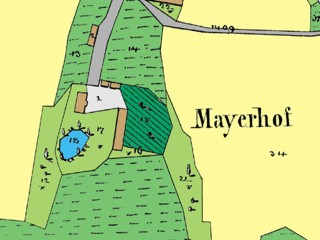

W programie TVP z cyklu "Telewizyjny Przewodnik Po Kraju. Para w Polskę" dotyczącym Krasiczyna i okolic wspomniano o naszej miejscowości określając ją jako "najmniejszą wieś w Polsce, w której mieszka tylko jeden człowiek".
25 lutego 2005W poszukiwaniu informacji na temat Kopysna wstąpiliśmy do Archiwum Państwowego w Przemyślu. Ujrzeliśmy ręcznie wykonane austriackie mapy katastralne z roku 1852 wraz z opisem (nr działek, wykaz właścicieli, lokalizacją budynków itp.). Po lewej stronie widoczny jest fragment takiej mapy (po zeskanowaniu i obróbce graficznej) przedstawiający dwór Józefa Tyszkowskiego. Mamy nadzieję, iż dzięki uzyskanym materiałom uda się nam wykonać cyfrową mapę Kopysna z roku 1852.

17 lutego 2005